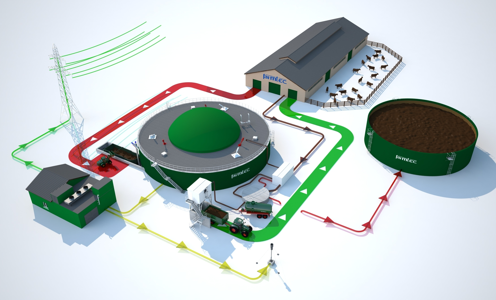

Crop-Dairy-Biogas Ecosystem
The "Energy Independent" Farm: Convert manure into cooking gas and liquid gold fertilizer.
1. Site Feasibility & Pre-requisites
🐄 Livestock Count
Min: 2-3 Cows.
To generate enough pressure for a household biogas cooking connection, you need a steady supply
of dung (approx 25-30kg per day).
🌾 Fodder Land
Napier Grass Plot.
You need dedicated land to grow high-yield fodder like Hybrid Napier or Maize to feed the
cattle, closing the loop.
💧 Water Availability
1:1 Mixing Ratio.
Biogas digesters require mixing dung with an equal amount of water. You need a consistent water
source for this daily mix.
2. Infrastructure & Layout
The system connects the animal shed directly to the digester for easy waste management.
🚧 Construction Specs
- Cattle Shed: Build with a sloped concrete floor so urine and dung wash directly into a collection channel.
- Biogas Digester: Underground brick/cement dome. Locate it near the kitchen to minimize gas pipe length.
- Slurry Pit: A collection tank for the "spent" liquid that comes out of the digester (the fertilizer).
3. The Nutrient Cycle
Waste becomes Energy. Manure generates gas, and the byproduct (slurry) grows the crops.
Produces Dung
Extracts Methane Gas
Liquid Fertilizer Output
Fodder/Veg grown on Slurry
4. Operational Calendar
This is a daily cycle system. Consistency is key for gas production.
Milk the cows. Wash the shed floor. Collect fresh dung.
Mix fresh dung with water in a 1:1 ratio. Pour into the inlet tank. This pushes old slurry out.
Collect the overflow slurry. Dilute it and apply it to the fodder grass or vegetable patch immediately.
Use the generated methane gas for cooking lunch. The pressure builds up overnight and during the morning.
Cut fresh Napier grass (fertilized by slurry) to feed the cows for the evening.
5. Risks & Solutions
⚠️ SAFETY WARNING
Methane is Flammable. Regularly check the gas valve and pipeline for leaks. Do not light fires near the digester dome.
| Problem | Solution |
|---|---|
| Low Gas Pressure | Cattle fed with too much dry straw. Increase green fodder intake. |
| Acidic Slurry (Bad smell) | Overfeeding the digester. Reduce loading rate for 3 days. |
6. Economics
💰 Cost Elimination
- LPG Gas: 100% savings on cooking fuel.
- Fertilizer: Bio-slurry replaces Urea/DAP for crops.
- Electricity: Can power simple lamps if volume is high.
📈 Revenue Sources
- Milk Sales: Primary daily income.
- Vegetable Sales: Excess crops grown using slurry.
- Dried Manure: Excess sludge can be dried and sold as compost.